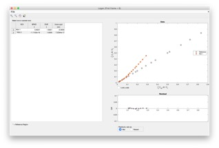
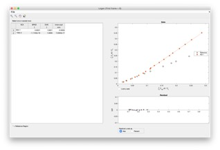

Pharmaco-kinetic models
Jan Axelsson 2021-JAN-21
Table of Contents
Multiple Time Graphical Analysis
Receptor models (= reversible binding)
SRTM – Simplified Reference Tissue Model
SRTM2 – Two-step Simplified Reference Tissue Model
Extended SRTM – change of condition at a time point T0
Water Perfusion with input function
Imlook4d handles a number of pharmaco-kinetic models for dynamic PET scans.
Most of the models described can be calculated for a region-of-interest, or as parametric images (in which each pixel is handled as a region-of-interest). Therefore, in below descriptions, region-of-interest can be read as either region-of-interest or pixel, depending what you wish to calculate.
Models on ROIs are started from the “SCRIPTS/Model on ROIs” menu.
Models on images are started from the “MODELS” menu.
Most of the models are based on reference regions. The assumption is that a reference region very similar to the regions you want to study exists, with the only difference that an uptake mechanism (receptors or other binding) is also present.
In order to calculate a model, a reference region has to be defined.
In imlook4d, the reference region is defined as one region-of-interest (ROI), or a combination of multiple ROIs. First ROIs are drawn, and secondly the user defines which ROIs should be used as a reference region. “Select Reference region” command can be selected from either the “SCRIPTS/Model on ROIs/Select Reference region” menu, or from “MODELS/ Select Reference region” menu. Trying to invoke a model without a defined reference region, will directly open the reference region selection dialog.
Some of the models are not based on reference regions. Instead, an input function describing the arterial input of the intact tracer is needed.
In order to calculate a model, the input function has to be defined.
In imlook4d, the input function is stored in a variable (Cinp is a good name, but you are free to choose any name). The time frames should be the same as the PET frames.
This is strictly speaking not a model, but just the ROI, or image, divided by the reference region value.
In the MODEL menu, the selection “No Model” resets the image to show the normal uptake. This is how you get out of displaying parametric images.
Sometimes referred to as graphical methods. Turku PET centre describes this class of methods this way: In these methods, the tracer concentration curves of tissue region-of-interest and arterial plasma are transformed and combined into a single curve that approaches linearity when certain conditions are reached. The data could be plotted in a graph, and line can be fitted to the linear phase.
Examples of such methods are Logan, Zhou, and Patlak plots (see below).
These methods have in common that the start and end of the linear phase has to be defined by the user. Therefore, typically data is analyzed graphically for ROIs (menu “SCRIPTS/Model on ROIs”), and the user makes a guess of start and end frames. Inspecting the curves for the ROIs, the guess can be updated until the line fits the linear part of the curve. Typically, the start frame is modified, and the end frame is the last frame of the dynamic scan.
 
Figure1.
Left), Logan plot for one reference (ROI2) inidicated with “*”, and one region
of interest (ROI1).
Right) the same graph zoomed in to see that the line fits the linear phase of
the curve of the region of interest.
The following models are implemented both for ROIs, and for making model images (parametric images). The models calculate non-displaceable Binding Potential, BPND, which is a combined measure of available receptor density Bavail and affinity 1/KD. BPND = Bavail / KD. Many of the models gives additional parameters, at the cost of robustness especially for model images. Therefore, the choice of model is dependent on data quality and what parameters are of interest.
• This model calculates the so called non-displaceable Binding
Potential, BPND, using a reference region. For most tracers, cerebellum is devoid of
receptors and used as a reference region. Calculates:
- BPND
Input parameters are:
- start frame (see Multiple Time Graphical Analysis above, on how to determine
start frame)
- end frame
- k2p transport from free to plasma, which for some tracers
(for instance raclopride) can be ignored by leaving this field blank (value
0 is not allowed).
See https://doi.org/10.1016/S0969-8051(00)00137-2
• This is another implementation of reference Logan, which is more
robust to noise. Calculates:
- BPND
Input parameters are:
- start frame (see Multiple Time Graphical Analysis above, on how to determine
start frame)
- end frame
Zhou is preferred over Logan for model images, since it is more robust on noisy
data.
See https://doi.org/10.1016/j.neuroimage.2008.09.021
• assumes, that mathematically, the kinetics of the receptor region
and the region of interest is described by the same equation (kinetics not
distinguishable). SRTM model calculates
the following parameters:
- BPND
- R1 = K1/K1ref accounting for
difference in delivery for region and reference region
- k2 transport from free to plasma in region of interest
- k2p transport from free to plasma from reference region
in addition the following parameter, used in the calculation, is reported:
- k2a apparent (overall) rate constant for transfer from specific
compartment to plasma. This comes from the assumption of kinetics being hard to
distinguish between reference region and region of interest.
No input parameters asked for.
See https://doi.org/10.1006/nimg.1996.0066
• Same assumptions as in SRTM, with addition that k2p is set constant
in whole brain. This model calculates
the following parameters:
- BPND
- R1 = K1/K1ref accounting for
difference in delivery to region and reference region or pixel
Input parameter:
- k2p from SRTM. Constant value for whole brain (or
representative regions of interest), calculated using SRTM for brain outside
reference region
SRTM2 is preferred over SRTM for model images, since it is more robust.
See https://doi.org/10.1097/01.WCB.0000033967.83623.34
This reference describes the
SRTM2 model as:
1. Use SRTM to calculate R1, k2, and k2p for all brain voxels.
Calculate a global k2p from all pixels outside the reference region.
2. Fix k2p to the global value and calculate functional images of BP and R1
(using the SRTM2 function in imlook4d – my comment)
•
The conditions may be a
pharmacological challenge, or a task switch at time T0 within
the same scan. Assumes that all
parameters except BP are constant over the whole scan, and that BP changes from
constant level BPND0 to BPND1 at time T0.
- DBP Binding potential difference
= BPND1 - BPND0
- BPND0 Binding
potential before T0
- BPND1 Binding
potential after T0
- R1 = K1/K1ref accounting
for difference in delivery for region and reference region
- k2 transport from free to plasma in region of interest
- k2p transport from free to plasma from reference region
Input parameter:
- Frame number, at which the change in condition occurs. An experiment is ideally designed so that the
change occurs exactly between two frames, so the frame number is the first
frame starting at time T0.
in addition the following parameter, used in the calculation, are reported:
- k2a, k2b apparent (overall) rate constant for
transfer from specific compartment to plasma before T0 (k2a)
and after T0 (k2b). This comes from the
assumption of kinetics being hard to distinguish between reference region and
region of interest.
See https://doi.org/10.1016/j.neuroimage.2006.06.038
•
builds on the notion that after
a while the blood plasma activity changes slowly, and the reversible
compartments have reached a steady-state equilibrium with plasma (reversible
compartments activity will be proportional to the plasma activity). This way
the blood and the irreversible compartments can be viewed as an input function,
with a single irreversible compartment constantly accumulating activity. The
Patlak model calculates:
- Ki the net transfer rate (or influx constant) to bound
state
Input parameter:
- Variable name, containing the time-activity curve of the intact tracer
molecule sampled from blood plasma.
Note 1: The time-points for the plasma
time-activity curve should be the same as the time frames in the PET data.
Note 2: The plasma time-activity curve
should be of intact tracer molecules. This means that if the tracer is
metabolized,
and one of the metabolites
are radioactive, advanced metabolite measurements and corrections have to be
performed.
See https://doi.org/10.1038%2Fjcbfm.1985.87,
http://www.turkupetcentre.net/petanalysis/model_patlak_interpretation.html
• uses the same principle as Patlak model above but requires a
reference tissue that does not display irreversible trapping. The most common tracer, FDG does not fulfil
this requirement.
The Reference Patlak model calculates:
- Ki the net transfer rate (or influx constant)
Input parameters are:
- start frame (see Multiple Time Graphical Analysis above, on how to determine
start frame)
- end frame
- l3 special case: rate constant for specific binding in
reference region (zero for most cases).
(see https://doi.org/doi:10.1016/j.jns.2007.01.057)
See
https://doi.org/10.1038%2Fjcbfm.1985.87 (Patlak),
https://doi.org/doi:10.1016/j.jns.2007.01.057 (for l3 special case).
• not an absolute tissue-perfusion model but calculates values
relative the whole brain (which should be the reference-region). This model
calculates:
- Perfusion
No input parameters asked for.
See https://doi.org/10.1177/0271678X17730654
•
This is an absolute
tissue-perfusion model, which requires an input function. This model calculates:
- Perfusion
Input parameter:
- Variable name, containing the arterial time-activity curve. This curve should
be sampled with same time frames as PET.
NOTE: As is, this model finds the delay between input function and tissue
curves. It does not perform any dispersion calculation.